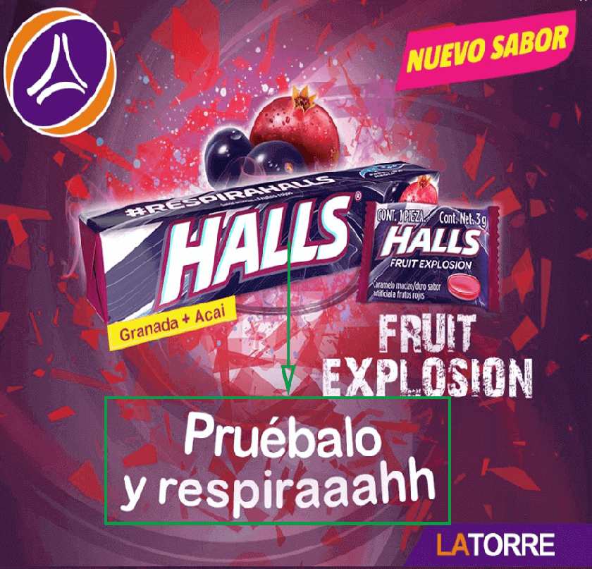
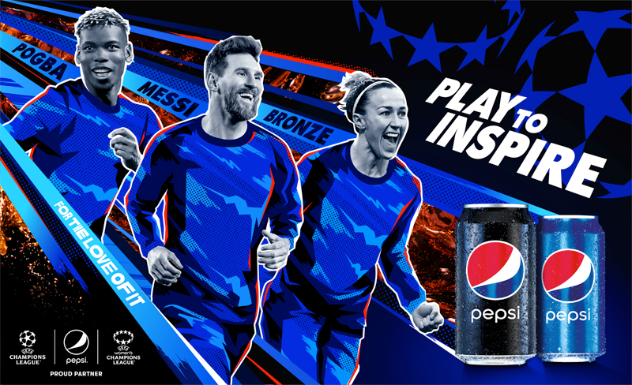
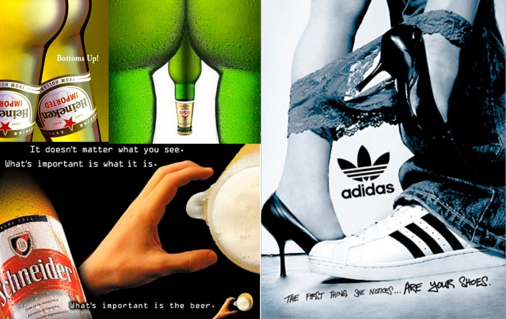
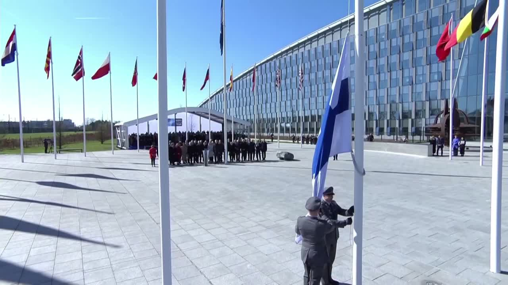
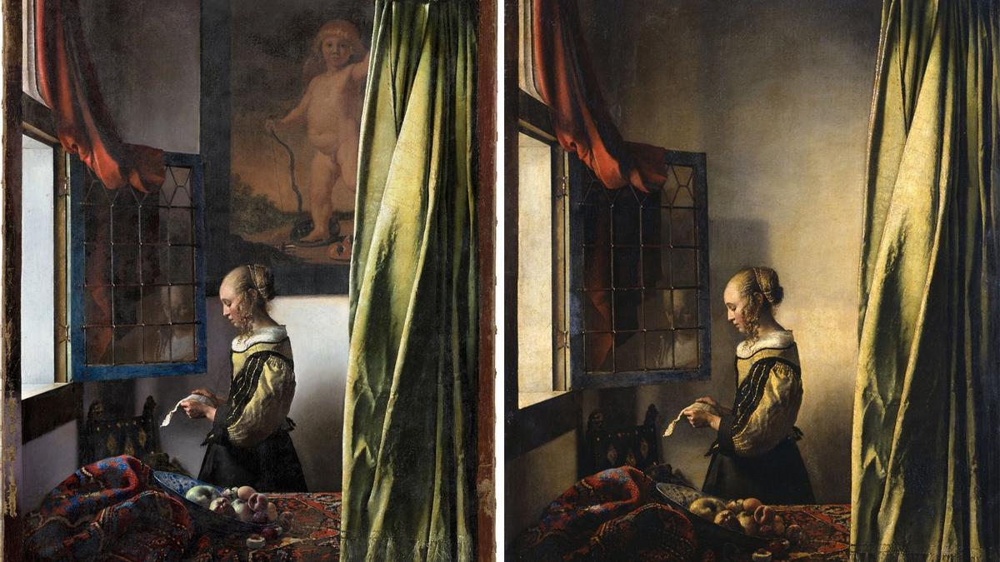

|  |
|  |
|  |
|
Una mujer y un hombre negro viajarán a la Luna por primera vez en la historia CienciaUna mujer y tres hombres serán los primeros astronautas en viajar a la Luna en más de 50 años. Las agencias espaciales de Estados Unidos y Canadá han presentado hoy a los cuatro astronautas de la misión Artemis 2, el primer ensayo tripulado del programa con el que las potencias espaciales occidentales quieren llevar humanos al satélite y a Marte. Los cuatro ocupantes de la flamante cápsula Orion, tres estadounidenses y un canadiense, han sido presentados hoy en un acto multitudinario en el Centro Espacial Johnson de Houston (EE UU) a las cinco de la tarde, hora peninsular española. |
Trump ante el juez por el caso Stormy Daniels. El expresidente se declara “no culpable”. InternacionalEL Faro ofrece de forma gratuita la última hora de la comparecencia de Trump ante el juez como servicio público. Si quieres apoyar nuestro periodismo, suscríbete.El expresidente de Estados Unidos Donald Trump se ha declarado “no culpable” de los 34 cargos por los que ha sido imputado, relacionados con un pago secreto, de 130.000 dólares (unos 120.000 euros), realizado en 2016 para comprar el silencio de la actriz porno Stormy Daniels sobre una aventura extramatrimonial con el magnate. Trump ha hecho estas declaraciones ante el tribunal penal de Manhattan, donde un número relativamente. |

Finlandia se convierte en el miembro 31 de la OTAN empujado por la guerra de Rusia en Ucrania ActualidadFinlandia ha pasado este martes a ser miembro formal de la OTAN. La guerra a gran escala de Rusia en Ucrania y las amenazas del presidente Vladímir Putin han alumbrado un cambio histórico en la política de seguridad finlandesa, que ha pasado de ser un país militarmente no alineado a ser el miembro número 31 de la Alianza Atlántica. La organización aspira a sumar muy pronto también a Suecia, cuyo acceso permanece bloqueado por Turquía y Hungría, que aún no han ratificado el acceso por distintos motivos políticos.“El presidente Putin quería cerrar de golpe la puerta de la OTAN. Ahora le mostramos que ha fallado”. |
|
De los estragos de la pandemia a una polémica regulación: así fracasaron las aerolíneas low cost EconomíaCon tan solo 30 días de diferencia, dos aerolíneas han suspendido operaciones en Colombia. El declive de Viva Air y Ultra, dos compañías de vuelos baratos asfixiadas por las deudas tras la pandemia, se ha vivido como en cámara lenta, mientras los pasajeros atascados en tierra se multiplican por cientos en plena Semana Santa. Tras esta crisis subyacen los sobresaltos en los precios del petróleo, la depreciación del peso frente al dólar y una gestión empresarial tachada por algunos analistas como “particular” y de “muy agresiva” por otros. Pero no solo eso.En el caso de Ultra Air, que operó durante un año. |
Corpoworking: la última ocurrencia para salvar las oficinas posterior a la pandemia TecnologíaSi hay algo que se asemeja al infierno en vida es la oficina. Las oficinas tienen la dudosa virtud de convertirse en universos opresivos en los que ser desgraciado. Las habitamos la mayor parte de nuestro tiempo de vigilia y en ellas vivimos dramas griegos por cuestiones cotidianas que se convierten en universales porque ocupan buena parte de nuestra existencia. La oficina es ese lugar en donde la gente es capaz de ser mezquina por encima de sus posibilidades, un interesante experimento conductual en el que los jefes psicopáticos observan como los mandados van más allá de lo que nunca hubiesen esperado de ellos. |

El misterio de las obras de arte donadas que nunca llegaron a la Universidad de Baleares CulturaCorría el año 1988 y el grupo ecologista balear GOB estaba centrado en impedir la construcción de un complejo urbanístico en la finca de Sa Canova, en el litoral del municipio mallorquín de Artà. Para conseguir una mayor movilización de la sociedad civil, el artista mallorquín Miquel Barceló invitó a un grupo de colegas a donar alguna obra original para crear carteles e impulsar la recaudación de fondos a favor de la causa ecologista en una campaña titulada Sa Canova contra Ravenna. Cinco pintores, además de Barceló, se sumaron a esta propuesta, que finalmente contó con las aportaciones de José María Sicilia, Xavier Mariscal. |